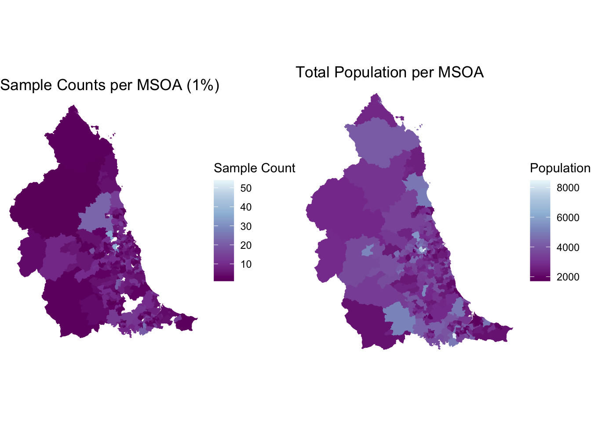
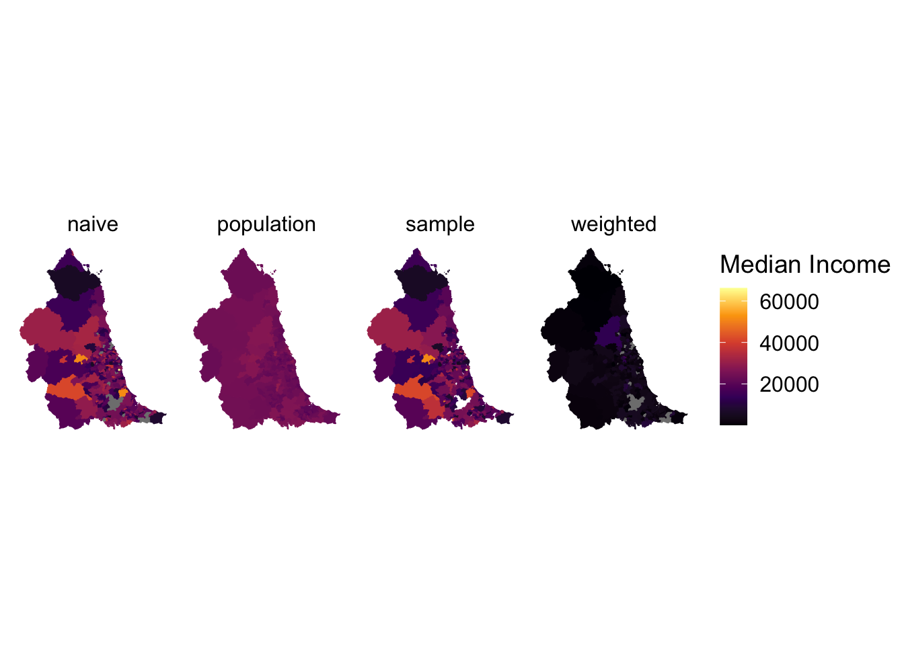
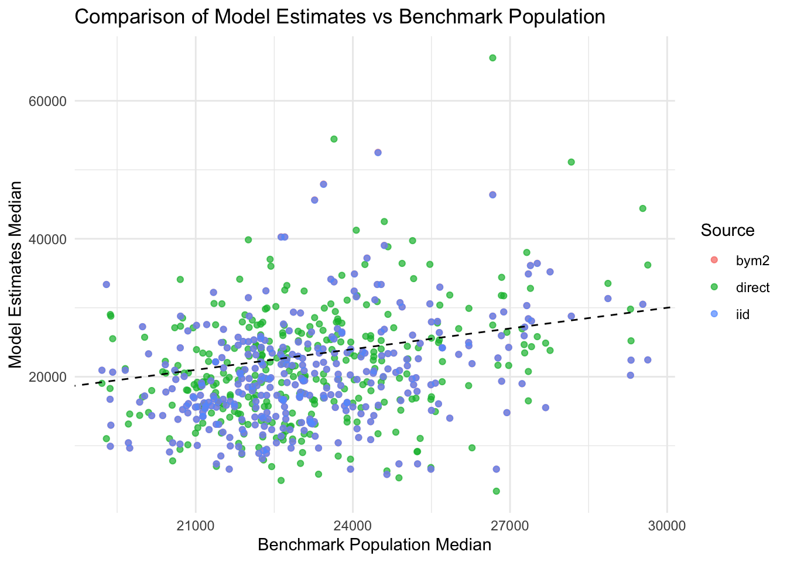

library(emdi)
library(survey)
library(SUMMER)
library(sf)
library(dplyr)
library(sfarrow)
library(ggplot2)
library(ggspatial)
library(cowplot)
library(gridExtra)
library(reshape2)
library(spdep)
library(tidyverse)
library(viridis)
library(fastDummies)Practical
Practical in R: Small Area Estimation
Introduction
Now that we have learned the fundamentals of small area estimation (SAE), we will apply these concepts to a real dataset. This practical uses a synthetic population for the North East of England, generated by (Castro et al. 2024). The dataset includes ~1 million individuals in the Tyne and Wear region with demographic and mobility-related attributes. Our goal is to estimate the median income of MSOAs in Tyne and Wear using SAE methods.
Objectives
- Evaluate the need for SAE through exploratory data analysis.
- Implement different SAE methodologies on synthetic data.
- Compare the performance of different methods.
Set-up
Load the necessary R libraries:
Understanding the Data
We use a synthetic population for the Tyne and Wear region. This dataset mimics real-world data while avoiding privacy concerns. Typically, full population data is unavailable, requiring us to work with sample surveys instead.
For this workshop, we consider the synthetic population as the ground truth. Our samples are stratified random samples representing subsets of the full population.
# Load sampled data
sample_1pct <- read.csv("./_data/sample_1pct.csv") # 1% sample
sample_5pct <- read.csv("./_data/sample_5pct.csv") # 5% sample
sample_10pct <- read.csv("./_data/sample_10pct.csv") # 10% sample
# Load full synthetic population
SynthPop_NE_2019 <- read.csv("./_data/SynthPop_NE_2019.csv")
# Load MSOA-level population data
pop <- st_read_parquet("./_data/pop_msoa.parquet")
pop <- st_drop_geometry(pop)
# Preview sample data
head(sample_1pct) PID_AreaMSOA HID_AreaOA Area_MSOA Area_OA Sex Age Ethnic
1 969_E02001682 80737_E00041816 E02001682 E00041816 1 21 2
2 899_E02001682 59166_E00041818 E02001682 E00041818 1 20 2
3 2856_E02001682 76146_E00041822 E02001682 E00041822 1 58 2
4 5400_E02001682 124_E00041822 E02001682 E00041822 2 31 2
5 778_E02001682 66807_E00041831 E02001682 E00041831 1 17 2
6 1019_E02001682 11977_E00041836 E02001682 E00041836 1 22 2
Marital_status Children_dependency Economic_activity Occupation Income
1 Single FALSE Employed 6 11310
2 Single FALSE Employed 4 8410
3 Married FALSE Employed 8 27950
4 Married FALSE Employed 2 25970
5 Single FALSE Unemployed 2 10040
6 Single FALSE Employed 7 9900
Driving_license Car_access Bike_access weight
1 TRUE FALSE TRUE 66
2 TRUE TRUE FALSE 61
3 TRUE FALSE FALSE 70
4 TRUE TRUE TRUE 62
5 FALSE FALSE TRUE 60
6 TRUE TRUE FALSE 65Data Coverage and Exploratory Analysis
Survey samples contain only a fraction of the population, which can lead to regions with low or missing observations, making estimates unreliable. Let’s analyze our sample distribution across MSOAs:

We see that some MSOAs have very few observations, making direct estimates unreliable.
Direct Estimator
To generate a direct estimator for Income we will apply the Horovitz-Thompson estimator, which
If we do not add sample weights to the estimator, we obtain a naive direct estimator.
# Naive direct estimator -- Without considering survey weigths
naive <- sae::direct(y = sample_1pct$Income,
dom = sample_1pct$Area_MSOA,
domsize = pop)We can also consider survey weights to generate a weighted direct estimator.
# Weighted direct estimator -- Adding survey weigths
weighted <- sae::direct(y = sample_1pct$Income,
dom = sample_1pct$Area_MSOA,
sweight = sample_1pct$weight, # We add weights
domsize = pop)Saving 7 x 5 in imageWarning: Removed 30 rows containing non-finite outside the scale range
(`stat_density()`).Saving 7 x 5 in image
Smoothed Estimators
Smoothed estimators borrow information from other areas to improve estimates for low-sample regions.
# Prepare population data
sample_1pct$pop <- sum(pop$population[match(sample_1pct$Area_MSOA, pop$MSOA11CD)])
# Survey design
design <- survey::svydesign(ids = ~1,
weights = ~weight,
data = sample_1pct,
fpc = ~pop)
# Direct estimator using `SUMMER`
smooth <- smoothArea(formula = Income~1,
domain = ~Area_MSOA,
design = design,
domain.size = pop %>% st_drop_geometry(),
return.samples = T)
# Make table
df <- data.frame(Area_MSOA = smooth$direct.est$domain,
direct = smooth$direct.est$median,
smoothed = smooth$iid.model.est$mean,
se_direct = sqrt(smooth$direct.est$var),
se_smoothed = sqrt(smooth$iid.model.est$var)) %>%
pivot_longer(cols = c(direct, smoothed, se_direct, se_smoothed),
names_to = "estimate_type",
values_to = "estimate_value")
# Add coordinates for mapping
df <- merge(df, msoa_geo, by.x = "Area_MSOA", by.y = "MSOA11CD") %>%
st_as_sf()
# Map
m <- ggplot() +
geom_sf(data = df, aes(fill = estimate_value, colour = estimate_value)) +
scale_fill_viridis_c(option = "magma", name = "GBP", direction = 1) +
scale_colour_viridis_c(option = "magma", name = "GBP", direction = 1) +
facet_wrap(~estimate_type, nrow = 1) +
theme_map()
ggsave(plot = m, filename = "./_figures/smooth_maps.png")Saving 7 x 5 in imageArea-Based Estimators
We incorporate spatial dependencies into the model using an adjacency matrix.
# We want to incorporate a spatial element into our model
# We need to know which regions are close to each other
# Therefore, we generate an adjacency matrix
mat <- nb2mat(poly2nb(msoa_geo), style = "B")
# Set column and row names to adjacency matrix
colnames(mat) <- rownames(mat) <- msoa_geo$MSOA11CD
# Make sure there is no mismatch between the areas in the adjacency matrix and those in the design
common_areas <- intersect(rownames(mat), unique(design$variables$Area_MSOA))
mat <- mat[common_areas,common_areas]
# Direct estimator using `SUMMER`
area_based <- smoothArea(formula = Income~1,
domain = ~Area_MSOA,
design = design,
adj.mat = mat)# Add covariates to enrich the model
Xmat <- aggregate(Age~Area_MSOA, data = sample_1pct, FUN = mean)
# Estimate model with covariates
area_based_covar <- smoothArea(Income ~ Age,
domain = ~Area_MSOA,
design = design,
adj.mat = mat,
X.domain = Xmat)length(unique(sample_1pct$Area_MSOA))[1] 325length(unique(SynthPop_NE_2019$Area_MSOA))[1] 340nrow(area_based_covar$direct.est)[1] 325ncol(mat)[1] 325# Convert covariates to dummies
census_covars <- dummy_cols(SynthPop_NE_2019, select_columns = c('Sex', 'Ethnic', 'Marital_status','Children_dependency','Economic_activity','Economic_activity'), remove_first_dummy = T, remove_selected_columns = T)
# Create covariates to enrich the model
X_mat <- aggregate(cbind(Age, Sex_2, Ethnic_4, Ethnic_6, Ethnic_8, Marital_status_Single,Children_dependency_TRUE) ~ Area_MSOA, data = census_covars, FUN = mean)
# Estimate model with covariates
# area_based_covar <- smoothArea(Income ~ Age + Sex_2,
# domain = ~Area_MSOA,
# design = design,
# adj.mat = mat,
# X.domain = X_mat)# Prepare comparison plots
## Direct estimator -- Area-based with covariates
direct_area_based_covar <- area_based_covar$direct.est %>%
dplyr::select(domain, median) %>%
rename(Area_MSOA = domain) %>%
mutate(source = "direct")
## IID model -- Area-based with covariates
iid_area_based_covar <- area_based_covar$iid.model.est %>%
dplyr::select(domain, median) %>%
rename(Area_MSOA = domain) %>%
mutate(source = "iid")
## BYM2 model -- Area-based with covariates
bym2_area_based_covar <- area_based_covar$bym2.model.est %>%
dplyr::select(domain, median) %>%
rename(Area_MSOA = domain) %>%
mutate(source = "bym2")
## Bind rows
combined_estimates <- bind_rows(direct_area_based_covar, bym2_area_based_covar, iid_area_based_covar)
## Filter populations values that are not in estimates
filtered_benchmark_population <- benchmark_population %>% filter(Area_MSOA %in% direct_area_based_covar$Area_MSOA)
## Merge everything together
plot_data <- combined_estimates %>%
left_join(benchmark_population %>% select(Area_MSOA, median), by = "Area_MSOA") %>%
rename(benchmark_median = median.y, estimate_median = median.x)
# Scatter plot
ggplot(plot_data, aes(x = benchmark_median, y = estimate_median, color = source)) +
geom_point(alpha = 0.7) +
geom_abline(slope = 1, intercept = 0, linetype = "dashed", color = "black") + # 45-degree reference line
labs(
x = "Benchmark Population Median",
y = "Model Estimates Median",
color = "Source",
title = "Comparison of Model Estimates vs Benchmark Population"
) +
theme_minimal()
# Density functions
combined_estimates <- bind_rows(direct_area_based_covar, bym2_area_based_covar, iid_area_based_covar, benchmark_population)
p <- ggplot() +
geom_density(data = combined_estimates, aes(x = median, fill = source), alpha = .7) +
scale_fill_manual(values = c("#e07a5f","#3d405b","#81b29a","#f2cc8f")) +
theme_minimal()
ggsave(plot = p, filename = "./_figures/area-level-density.png")Saving 7 x 5 in imagegdf <- merge(combined_estimates, msoa_geo, by.x = "Area_MSOA", by.y = "MSOA11CD") %>%
st_as_sf()
m <- ggplot() +
geom_sf(data = gdf, aes(fill = median, colour = median)) +
scale_fill_viridis_c(option = "magma", name = "GBP", direction = 1) +
scale_colour_viridis_c(option = "magma", name = "GBP", direction = 1) +
facet_wrap(~source, nrow = 1) +
theme_map()
ggsave(plot = m, filename = "./_figures/area-level-maps.png")Saving 7 x 5 in imageReferences
Castro, David Alvarez, Alistair Ford, Philip James, Roberto Palacı́n, and Dominik Ziemke. 2024. “A MATSim Model Methodology to Generate Cycling-Focused Transport Scenarios in England.” Journal of Urban Mobility 5: 100078.